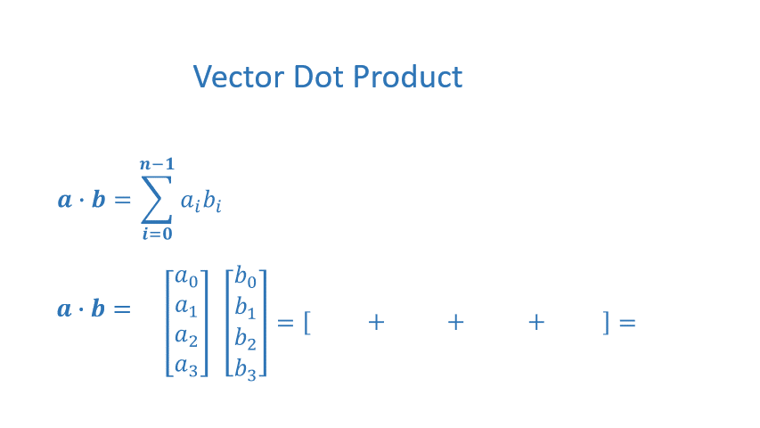

Hồi quy nhiều biến & vectorization
Giá nhà không chỉ phụ thuộc diện tích. Thêm số phòng ngủ, số tầng, tuổi nhà — và học cách để NumPy làm phép tính thay cho vòng lặp.
NumPy: vector và ma trận
NumPy là nền móng của gần như mọi thư viện ML trong Python. Đối tượng trung tâm là ndarray — mảng nhiều chiều, cùng kiểu dữ liệu, lưu liên tục trong bộ nhớ.
import numpy as np
a = np.zeros(4) # [0. 0. 0. 0.]
a = np.arange(4.) # [0. 1. 2. 3.]
a = np.random.random_sample(4) # 4 số ngẫu nhiên trong [0, 1)
a = np.array([5, 4, 3, 2])
a[2], a[-1] # truy cập phần tử: 3, 2
a[1:3] # cắt (slicing): [4, 3]
a.shape # (4,)
X = np.array([[1, 2], [3, 4], [5, 6]])
X.shape # (3, 2): 3 hàng (ví dụ), 2 cột (đặc trưng)
X[1] # hàng thứ 2: [3, 4]
X[:, 0] # cột đầu tiên: [1, 3, 5]
X.reshape(-1, 1) # -1: "tự tính số hàng"Tích vô hướng (dot product)
Phép toán xuất hiện ở khắp nơi trong ML:

def my_dot(a, b):
x = 0
for i in range(a.shape[0]):
x = x + a[i] * b[i]
return x
a = np.array([1, 2, 3, 4]); b = np.array([-1, 4, 3, 2])
my_dot(a, b), np.dot(a, b) # (24, 24)Vì sao vectorization nhanh?
Lab01 đo thời gian tính tích vô hướng của hai vector 10 triệu phần tử: vòng lặp Python mất vài giây, np.dot chỉ mất vài mili-giây — nhanh hơn hàng trăm lần.
- NumPy chạy vòng lặp bằng C đã biên dịch, không phải trình thông dịch Python.
- CPU hiện đại có lệnh SIMD (một lệnh xử lý nhiều số cùng lúc); GPU còn song song hoá ở quy mô hàng nghìn lõi.
- Bộ nhớ liên tục giúp tận dụng cache.
Mỗi khi thấy vòng for chạy qua từng ví dụ hoặc từng đặc trưng, hãy tự hỏi: có viết được bằng np.dot, @, np.sum, broadcasting không?
Broadcasting
NumPy tự “kéo giãn” mảng có kích thước khác nhau khi làm phép toán từng phần tử, miễn là các chiều tương thích (bằng nhau hoặc bằng 1):
X = np.array([[1, 2, 3], [4, 5, 6]]) # (2, 3)
mu = X.mean(axis=0) # (3,) trung bình từng cột
X - mu # (2, 3) — mu được lặp cho mỗi hàng
5 * np.array([1, 2]) # [5, 10]Hồi quy tuyến tính nhiều biến
Dữ liệu trong Lab02:
| Diện tích (sqft) | Số phòng ngủ | Số tầng | Tuổi nhà | Giá (1000s $) |
|---|---|---|---|---|
| 2104 | 5 | 1 | 45 | 460 |
| 1416 | 3 | 2 | 40 | 232 |
| 852 | 2 | 1 | 35 | 178 |
Ma trận dữ liệu \(\mathbf{X}\) có kích thước \(m \times n\) (mỗi hàng là một ví dụ), tham số là vector \(\mathbf{w}\) có \(n\) phần tử và số \(b\). Mô hình:
def predict(x, w, b):
return np.dot(x, w) + b
# dự đoán cho TẤT CẢ ví dụ cùng lúc: (m,n) @ (n,) -> (m,)
y_hat = X_train @ w + bChi phí và gradient dạng vector
Viết gọn bằng ma trận, với \(\mathbf{e} = \mathbf{X}\mathbf{w} + b - \mathbf{y}\) là vector sai số:
def compute_cost(X, y, w, b):
err = X @ w + b - y
return (err @ err) / (2 * X.shape[0])
def compute_gradient(X, y, w, b):
m = X.shape[0]
err = X @ w + b - y # (m,)
dj_dw = X.T @ err / m # (n,)
dj_db = err.sum() / m # số
return dj_db, dj_dwSo với bản trong lab (hai vòng for lồng nhau qua \(i\) và \(j\)), bản vector hoá ngắn hơn, ít lỗi hơn và nhanh hơn rất nhiều.
Chạy gradient descent trên dữ liệu nhà ở Lab02 với α = 5e-7 và 1000 vòng lặp, kết quả dự đoán vẫn lệch xa giá thật. Lý do: diện tích (cỡ 1000) và số tầng (cỡ 1) chênh nhau vài bậc độ lớn. Chương 5 sẽ sửa bằng feature scaling.
Phần lớn bug trong code ML là bug về shape. Một vài mẹo:
- Phân biệt
(n,)(vector 1 chiều) với(n,1)(ma trận cột). Trừ(m,)cho(m,1)sẽ broadcast thành(m,m)— không lỗi nhưng sai hoàn toàn! - Đặt
assert y_hat.shape == y.shapeở những chỗ quan trọng. - Ghi shape trong comment như các lab:
# (m,n) @ (n,) -> (m,).
Đi từng bước qua lab
- Lab01 — tạo vector.
np.zeros,np.arange,np.random.random_sample,np.array; kiểm traa.shapevàa.dtype. - Chỉ số và cắt.
a[2],a[-1],a[2:7:1],a[3:]; truy cập ngoài phạm vi sẽ báoIndexError. - Phép toán trên vector.
-a,np.sum(a),np.mean(a),a**2,a + b(cùng kích thước),5 * a. - So tốc độ. Tích vô hướng của hai vector 10 triệu phần tử: bản
np.dottrong lab của mình chạy khoảng 169 ms; bản vòngforchậm hơn rõ rệt (notebook của mình không lưu lại số đo của bản này). - Lab02 — dữ liệu nhà 4 đặc trưng.
X_traincó shape (3, 4);w_initvàb_initđược cho sẵn gần nghiệm tối ưu. - Dự đoán một ví dụ theo hai cách (vòng lặp từng phần tử và
np.dot) để thấy kết quả giống nhau. - Viết
compute_costvàcompute_gradientcho nhiều biến (vòng lặp ngoài qua ví dụ, vòng trong qua đặc trưng). - Chạy gradient descent 1000 vòng với \(\alpha = 5\times10^{-7}\). Kết quả dự đoán: 426.19 (thật 460), 286.17 (thật 232), 171.47 (thật 178), vẫn lệch vì các đặc trưng chưa được chuẩn hoá.
Một mô hình định giá nhà thực tế dùng hàng chục đặc trưng: diện tích, số phòng ngủ, số tầng, tuổi nhà, khoảng cách tới trung tâm, mặt tiền hay trong hẻm… Mỗi đặc trưng có một trọng số \(w_j\) mang ý nghĩa đọc được, ví dụ \(w_{\text{khoảng cách}} \lt 0\): càng xa trung tâm càng rẻ. Với 1 triệu căn nhà và 50 đặc trưng, X @ w là phép nhân ma trận (1.000.000 × 50) · (50,) mà NumPy làm trong vài mili-giây; viết bằng hai vòng for lồng nhau sẽ mất nhiều phút.
Ghi nhớ
- \(f_{\mathbf{w},b}(\mathbf{x}) = \mathbf{w}\cdot\mathbf{x} + b\); cả tập:
X @ w + b. - Gradient: \(\frac{1}{m}\mathbf{X}^\top(\mathbf{X}\mathbf{w}+b-\mathbf{y})\).
- Vectorization nhanh hơn vòng lặp hàng trăm lần và ít bug hơn.
Tự kiểm tra
X có shape (100, 4), w có shape (4,). X @ w có shape gì?
(100,) — một dự đoán cho mỗi ví dụ.
Viết một dòng tính trung bình mỗi đặc trưng của X.
X.mean(axis=0) — axis=0 nghĩa là “gộp theo chiều hàng”, kết quả có một giá trị cho mỗi cột.